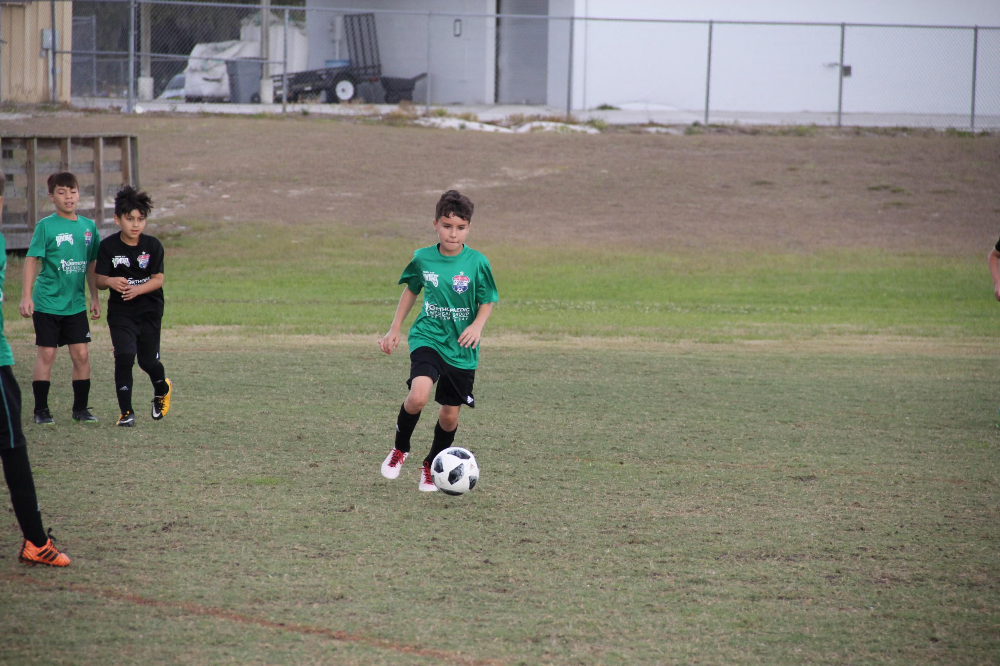

Some of the awards I have won
- Regional Winners
- MVP
- MVP
- Captian
- Captian again
- Captian again
- All time starter
- Presidents cup win
- Real cup finalists

When I was in Florida, I was playing competitive soccer from when I was 3-12. I forgot the teams I was on when I was a bit younger but the last few years of that time, I was on the PRE DA team. This is basically the second team, the one right under the DA(or acadamy) team. I then moved for my Dad's work. I moved to Colorado. I started of the Real Colorado's National team, also the second team; the one right under acadamy. Today the National team is called ECNL. I did not do too good this season because I was not used to the elevation change, making it hard to breath and run. The year after that, I got dropped one team to the olympico team. I had a great year, so I moved up again. This time not to ECNL, but to e64(elite 64). This is a new league introduced in 2023, and I absolutly love it. I got to travel to Florida, Arizona a few times, Utah a few times, and California.